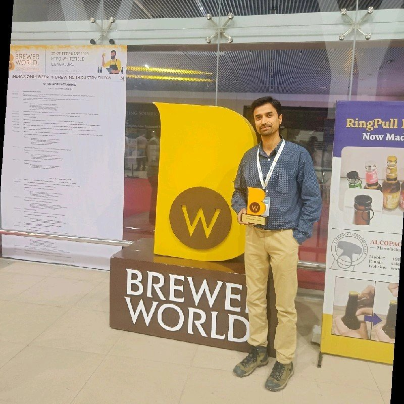

Mango, guava and buransh: the fruit beers on Gagan Deep's taps
Hops n Grains is known for its fruit beers as much as its lager. Brewmaster Gagan Deep has poured green apple, berry, mango, guava and rhododendron beers in the Tricity. Here is what is on that list and what brewing with Indian fruit involves.

A fruit list with a North Indian accent
Hops n Grains, the Tricity brewpub group where Gagan Deep is in-house brewmaster, opened with a short list of core beers: a premium lager, a wheat beer and a dark beer. Over the years the taps have filled with fruit. Press visits have recorded green apple, strawberry, raspberry, mango and guava beers. There has also been a rhododendron beer, made with buransh, the red Himalayan flower that Uttarakhand and Himachal turn into squash every spring.
Green apple is the one visitors keep mentioning. Mango and guava come up most in summer write-ups. Buransh is the most local of the lot and the one a brewer anywhere else would struggle to copy.

What fruit does to a beer
Fruit adds three things: fermentable sugar, acid and aroma. The sugar ferments out, so the beer gets drier and a little stronger rather than sweeter. The acid stays and sharpens the finish. The aroma is the fragile part. Much of it is lost if the fruit sees heat or too much active fermentation.
That is why most brewers add fruit after the main fermentation, in the conditioning tank, once the vigorous carbon dioxide has stopped scrubbing aroma out of the beer. Our guide to adding fruit to beer covers timing, purée versus whole fruit and how much to use.
The Indian fruit problem
Indian fruit is wonderful and difficult. Mango varies enormously by variety and ripeness. An Alphonso purée and a Dasheri purée will give two different beers. Guava has a high pectin content, which can leave a permanent haze and clog filters if you do not treat it with pectinase. Fresh fruit also brings wild yeast and bacteria into a clean cellar.
The practical answers are the same ones brewpubs use worldwide. Buy aseptic purée from a food-grade supplier where you can. If you must use fresh fruit, pasteurise or freeze it first. Measure the purée's sugar in degrees Brix so you can predict the extra alcohol. Taste every lot before it goes in, because no two crops are alike.
How much fruit to add
Fruit rates vary widely. Brewers commonly use somewhere between 50 and 200 g of purée per litre of beer, depending on the fruit and how strong a character they want. Delicate fruit like guava sits at the high end. Intense fruit like raspberry needs less.
Work out the alcohol it adds before you brew. Take mango purée at 15 °Brix, which is about 15 g of sugar per 100 g. At 100 g of purée per litre, that is 15 g of sugar per litre. Yeast turns roughly half the weight of sugar into alcohol, so about 7.5 g of ethanol per litre, or close to 1% ABV extra. On a 1,000 litre batch that is a real change to the label and to the excise paperwork, so put it into the recipe sheet rather than finding out after packaging.
Buransh, a beer with an address
The rhododendron beer deserves its own note. Buransh flowers are collected in the hills for a few weeks in spring and usually sold as a sweet, tart squash. Brewing with it ties a Panchkula brewpub to the Shivalik hills on its doorstep.
That is the real lesson in Gagan's fruit list. A fruit beer made with an ingredient your guests know from home is a story the floor staff can tell in one line. A raspberry beer is pleasant. A buransh beer is a reason to visit.
Keep the base beer honest
Fruit hides nothing. A fruit beer built on a base beer with a fault simply makes the fault fruity. Keep the base simple and clean, usually a light lager or a wheat beer with modest bitterness, so the fruit has room. High bitterness and fruit acidity together taste harsh.
Hops n Grains' own core range points the same way. Its regular beers have long included wheat and lager. Those are the obvious carriers for fruit. Getting the base right every time is the unglamorous part of a fruit programme. It is also the part guests notice when it goes wrong.
Common questions
What fruit beers does Hops n Grains brew?
Press visits have recorded green apple, strawberry, raspberry, mango, guava and a rhododendron (buransh) beer, alongside the core lager, wheat and dark beers. The seasonal list changes through the year.
When should fruit be added to beer?
Usually after the main fermentation, in the conditioning tank, so less aroma is scrubbed out by carbon dioxide.
Why does guava beer go hazy?
Guava is high in pectin, which causes a lasting haze. Brewers treat the fruit with pectinase enzyme to break it down.